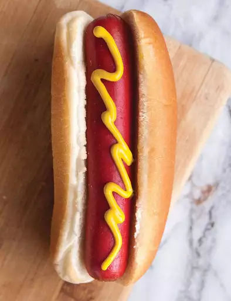

Basic Air Fryer Hot Dogs

Description
There’s no need to fire up the grill — these air fryer hot dogs are crispy, juicy, and come together in mere minutes.
Ingredients
- 4 hot dog buns
- 4 hot dogs
Steps
- Preheat an air fryer to 400 degrees F (200 degrees C).
- Place buns in a single layer in the air fryer basket; cook in the preheated air fryer until crisp, about 2 minutes. Remove buns to a plate.
- Place hot dogs in a single layer in the air fryer basket; cook for 3 minutes. Serve hot dogs in toasted buns.